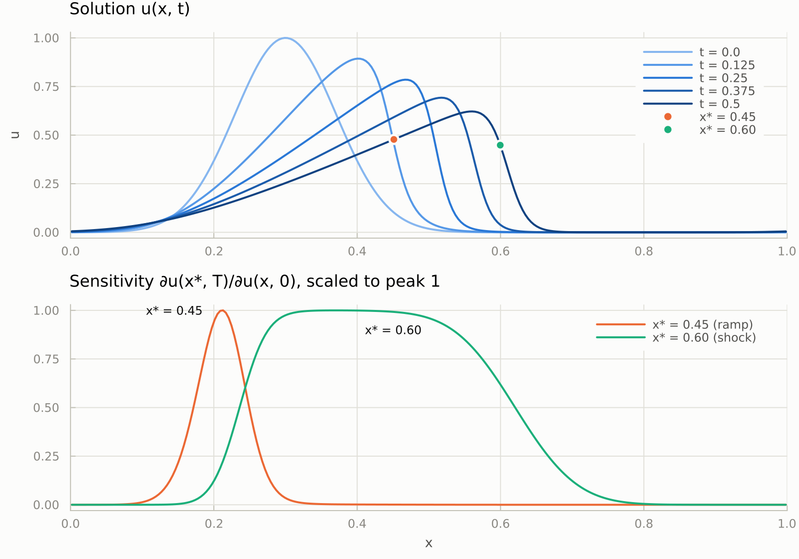
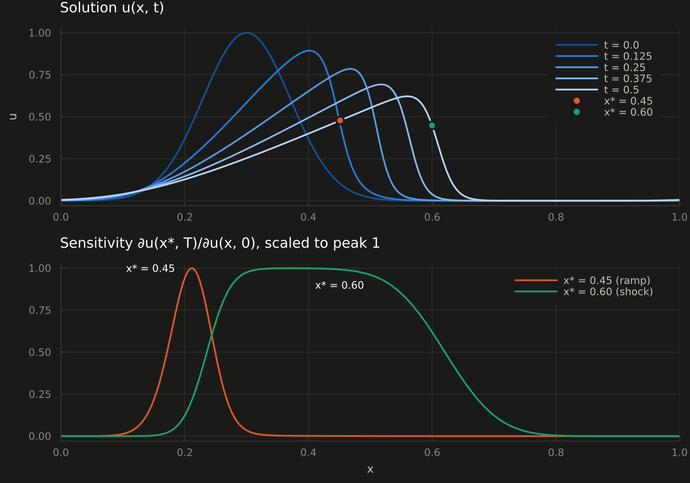

1D Burgers equation
The viscous Burgers equation $u_t + (u^2/2)_x = \nu u_{xx}$ is nonlinear, so the adjoint of each time step depends on the state at that step. A reverse pass therefore needs every forward state, and storing them all takes memory proportional to the number of time steps. Checkpointing stores a few of them and recomputes the rest.
We start from a Gaussian bump on the periodic unit interval. Its crest travels fastest, so the front steepens into a shock. The time loop is wrapped in @ad_checkpoint, and Revolve(10) keeps 10 of the 500 states, recomputing the others during the reverse pass.
# Viscous Burgers equation u_t + (u²/2)_x = ν u_xx on the periodic unit interval.
# The crest of a Gaussian bump travels fastest, so the wave steepens into a shock.
using Checkpointing
using Enzyme
mutable struct Burgers
u::Vector{Float64} # state at the current time step
ulast::Vector{Float64} # state at the previous time step
ν::Float64 # viscosity
Δx::Float64
Δt::Float64
end
Burgers(u0; ν = 0.005, Δt = 1e-3) = Burgers(copy(u0), similar(u0), ν, 1 / length(u0), Δt)
# One explicit Euler step, central differences, periodic boundaries.
function step!(b::Burgers)
b.ulast .= b.u
u, n = b.ulast, length(b.u)
for i = 1:n
l = i == 1 ? n : i - 1
r = i == n ? 1 : i + 1
flux = (u[r]^2 - u[l]^2) / (4 * b.Δx)
diffusion = b.ν * (u[r] - 2 * u[i] + u[l]) / b.Δx^2
b.u[i] = u[i] + b.Δt * (diffusion - flux)
end
return nothing
end
# u(x_k, T) after `steps` time steps.
function probe(b::Burgers, scheme::Scheme, steps::Int, k::Int)
@ad_checkpoint scheme for i = 1:steps
step!(b)
end
return b.u[k]
end
# The gradient of u(x_k, T) with respect to the initial condition u(x, 0).
function sensitivity(u0::Vector{Float64}, scheme::Scheme, steps::Int, k::Int)
b = Burgers(u0)
db = Enzyme.make_zero(b)
autodiff(Reverse, probe, Duplicated(b, db), Const(scheme), Const(steps), Const(k))
return db.u
endsensitivity returns the gradient of $u(x^*, T)$ with respect to the whole initial condition, from one reverse pass. Here we probe the shock at $x^* = 0.6$ after $T = 0.5$:
n = 256
x = ((1:n) .- 0.5) ./ n
u0 = exp.(-((x .- 0.3) ./ 0.1) .^ 2)
k = argmin(abs.(x .- 0.6)) # probe the shock at x* = 0.6
du0 = sensitivity(u0, Revolve(10), 500, k) # T = 500 * Δt = 0.5

A point on the smooth ramp behind the crest ($x^* = 0.45$) depends only on a narrow patch of the initial condition near $x = 0.21$, where its characteristic starts. A point in the shock ($x^* = 0.60$) depends almost equally on everything between $x = 0.3$ and $x = 0.6$: all of that fluid has run into the shock, and the shock's position depends on how much of it there was. Its total sensitivity is almost 30 times larger.
The code is in examples/burgers.jl, and examples/burgers_plots.jl draws the figure.